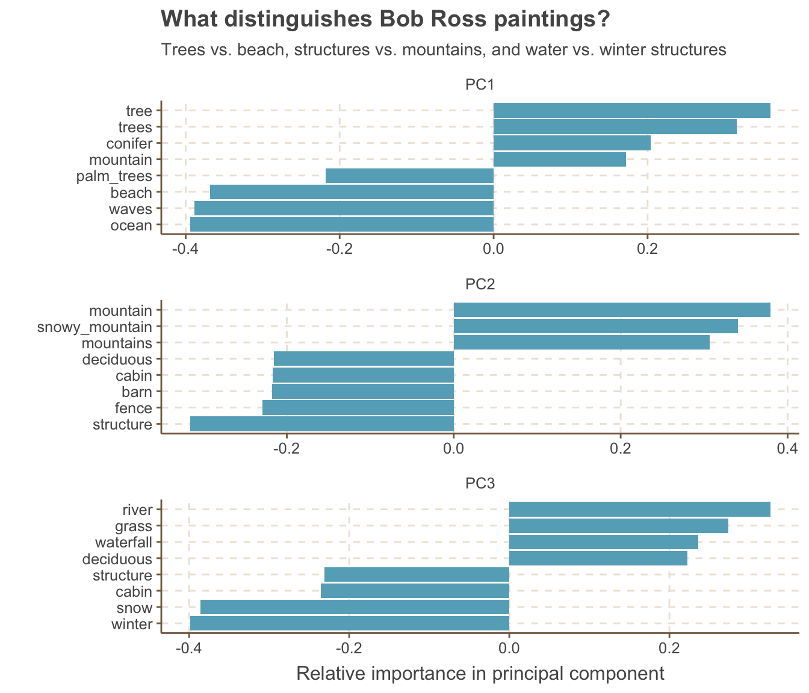

Using the tidyverse and PCA to explore the features of Bob Ross’ paintings.
R
Code
Visualization
Author
Emily Robinson
Published
August 14, 2019
In this post, I try something new and share an analysis I did without stopping to explain the code along the way (with a few exceptions). I analyze a dataset on Bob Ross paintings from last week’s Tidytuesday, an initiative by the R for Data Science online learning community. Each Monday, a new dataset is posted on GitHub with a short description. You can see some analyses and visualizations people have done by searching for the #tidytuesday hashtag on Twitter.
In this dataset, each row describes a painting Bos Ross (or a guest) did on his show, with the episode, season, title, and a column for each feature (e.g. “tree”, “mountain”) that is 1 if that painting included that feature and 0 otherwise. Let’s go exploring!
Set up
library(tidyverse)ggthemr::ggthemr('fresh')bob_ross <-read_csv("https://raw.githubusercontent.com/rfordatascience/tidytuesday/master/data/2019/2019-08-06/bob-ross.csv")# copied from tidytuesday repobob_ross <- bob_ross %>% janitor::clean_names() %>%separate(episode, into =c("season", "episode"), sep ="E") %>%mutate(season =str_extract(season, "[:digit:]+")) %>%mutate_at(vars(season, episode), as.integer) %>%# added to clean up titlemutate(title =str_remove_all(title, '"')) bob_ross %>%head(5) %>%select(1:7) %>% knitr::kable()
season
episode
title
apple_frame
aurora_borealis
barn
beach
1
1
A WALK IN THE WOODS
0
0
0
0
1
2
MT. MCKINLEY
0
0
0
0
1
3
EBONY SUNSET
0
0
0
0
1
4
WINTER MIST
0
0
0
0
1
5
QUIET STREAM
0
0
0
0
Exploratory graphs
Let’s start with some basic data exploration. What are the ten most frequent features in his paintings?
bob_ross %>%summarize_at(vars(apple_frame:wood_framed), ~sum(.)) %>%gather(feature, nb_paintings) %>%mutate(feature =fct_reorder(feature, nb_paintings)) %>%top_n(10, nb_paintings) %>%ggplot(aes(x = feature, y = nb_paintings)) +geom_col() +coord_flip() +labs(y ="Number of paintings", title ="What were most common features in Bob Ross paintings?",x ="")
If you’ve seen Bob Ross paintings, it’s probably not too surprising that “tree” is the top feature. I am a bit surprised to find that trees, deciduous, and conifer are all separate features (the latter two are types of trees).
Let’s adapt this to show what percent of paintings contained the feature, rather than the total number.
bob_ross %>%summarize_at(vars(apple_frame:wood_framed), ~sum(.)) %>%gather(feature, nb_paintings) %>%mutate(total_paintings =nrow(bob_ross),pct_w_feature = nb_paintings / total_paintings,feature =fct_reorder(feature, pct_w_feature)) %>%top_n(10, pct_w_feature) %>%ggplot(aes(x = feature, y = pct_w_feature)) +geom_col() +coord_flip() +labs(y ="Percent of paintings with feature", title ="What were most common features in Bob Ross paintings?",x ="") +scale_y_continuous(label = scales::percent) +expand_limits(y =1)
This gives some more context of just how common having a tree was - more than 80% of the paintings had one!
Did the content of the paintings change over time? We can answer this question in a lot of different ways - let’s start by looking at features that appeared in more than 150 paintings and their trends over the seasons.
nb_features_by_season %>%add_count(feature, wt = nb_paintings, name ="nb_total") %>%filter(nb_total >150) %>%ggplot(aes(x = season, y = nb_paintings, color = feature)) +geom_line() +facet_wrap(~ feature) +labs(y ="Number of paintings with feature",title ="Bob Ross always loved trees, but fell out of love with clouds",subtitle ="Dashed line is number of episodes in the season") +geom_hline(yintercept =13, lty =2) +theme(legend.position ="none") +expand_limits(y =0)
Trees (of all types) stay consistently popular across seasons, while clouds became less featured.
What features have the great absolute difference between the first and second half of the series?
`summarise()` has grouped output by 'season_half'. You can override using the
`.groups` argument.
by_feature_half %>%mutate(feature =fct_reorder(feature, difference, .desc =TRUE),season_half =ifelse(season_half =="first", "1-15", "16-31")) %>%ggplot(aes(nb_paintings, feature)) +geom_line() +geom_point(aes(color = season_half)) +scale_color_manual(values =c("#E84646", "#233B43")) +scale_x_continuous(labels = scales::percent) +labs(x ="Percent of paintings with feature",y ="",title ="What features became more or less frequent?",color ="Seasons")
As we had seen in our graph of the top 6 features, clouds (and it’s like, cumuls and cirrus) went down, while framed got a little more popular.
What’s the distribution of the number of features per painting (code for a calculating the summary of a row thanks to this tweet by Jenny Bryan)?
bob_ross %>%mutate(nb_features =select_at(., vars(apple_frame:wood_framed)) %>%pmap_dbl(sum)) %>%ggplot(aes(x = nb_features)) +geom_histogram(bins =16) +labs(x ="Number of features in a painting",y ="Number of paintings",title ="Most paintings had between 5 and 11 features")
Most paintings have between 5 and 11 features, although one has more than 15 and a couple have none.
Principal Component Analysis
In short, principal component analysis is a dimensionality-reduction technique that takes all of your variables and creates a new set of characteristics that still contains the most information. For more information, I highly recommend checking out this StackOverflow answer for great explanations from simple to mathematical and Julia Silge’s post where she explains principal component analysis using StackOverflow data.
We’ll start by selecting only features that appear in at least 5 paintings and calculate three principal components, adding scale = TRUE to scale the features. This is a critical step; while the features are all on the same scale (0 or 1, not say 0 or 100 for one and 0 or 50 for another), they have different variances as some have a lot of 1s and some a lot of 0s. We need to center our data so that they all have the same mean and variance.
Let’s take a look at which features have the most relative importance (highest absolute value) for each component. We’re going to use the new tidytext functions reorder_within() and scale_x_reordered() to make the features ordered within each plot (see Julia Silge’s post for more).
library(tidytext)tidied_pca %>%group_by(PC) %>%top_n(8, abs(value)) %>%ungroup() %>%ggplot(aes(x =reorder_within(feature, value, PC), y = value)) +geom_col() +coord_flip() +facet_wrap(~ PC, scales ="free", ncol =1) +scale_x_reordered() +labs(title ="What distinguishes Bob Ross paintings?",subtitle ="Trees vs. beach, structures vs. mountains, and water vs. winter structures", y ="Relative importance in principal component",x ="")

We find that the first principal component divides painting between those at the ocean (with beach and palm trees) and those in the tree covered mountains. The next component divides mountains from structures like cabin and barns, while the final one distinguishes a cabin in the snow from a grassy river.
Conclusion
I hope you enjoyed this new style of post and were able to learn some new tricks along the way. Let me know what you think on twitter!